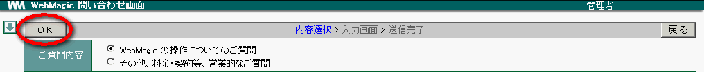

23. お問合せ¶
WebMagic に関するお問合せを行います。
23.1. 質問する¶
WebMagic の操作についてのご質問が行えます。質問は、この画面からのみの受付となります。
メニューの
 をクリックします。
をクリックします。 をクリックします。
をクリックします。ご質問内容を選択し、 OK をクリックします。

[お問合せ内容] の OS, バージョン, ブラウザ をご確認ください。お問合せ内容を入力後 送信 をクリックします。

Note
お問合せ内容につきましては、詳しい情報提供をお願い致します。
- 例) メール送信ができない。